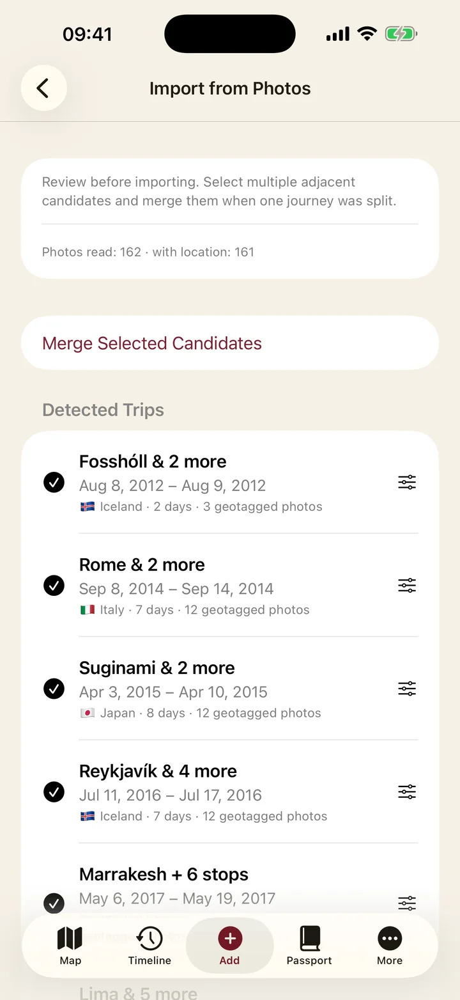

Tú mandas
Cada viaje detectado aparece primero para revisión: renómbralo, divídelo, fusiona candidatos o descártalo. Las fotos solo se unen a tus viajes manuales si lo apruebas — y un descarte se recuerda para siempre.
Años de viajes descansan en tu biblioteca de fotos. Voymark lee sus lugares y fechas — solo en tu dispositivo — y los convierte en viajes, lugares y sellos de pasaporte que revisas antes de guardar nada.
Gratis · sin suscripciónFunciona sin conexiónSin cuenta · sin rastreo


Cada viaje detectado aparece primero para revisión: renómbralo, divídelo, fusiona candidatos o descártalo. Las fotos solo se unen a tus viajes manuales si lo apruebas — y un descarte se recuerda para siempre.
Escanea toda tu biblioteca, el último año, todo desde la última vez o cualquier periodo — una época a la vez. Tu zona de casa confirmada queda excluida: las fotos cotidianas nunca se convierten en "viajes".
El escaneo funciona en modo avión — de eso se trata. Ubicaciones y fechas se leen en tu teléfono, las imágenes nunca se copian ni se suben, y revocar el acceso a fotos es un interruptor en los ajustes.
Los viajes antiguos suelen estar en una tarjeta de memoria, un disco externo o una carpeta de copia restaurada, no en la fototeca del teléfono. Voymark también puede escanear una carpeta, leyendo las mismas ubicaciones y fechas y proponiendo los mismos viajes para revisar — así la década anterior a este teléfono no se pierde.
Las fotos hechas cerca unas de otras el mismo día forman una parada. Las paradas de días consecutivos forman un viaje, y un hueco de más de dos días lo cierra: un verano con tres vacaciones vuelve como tres viajes, no como una única mancha larga.
Cada parada la nombra el geocodificador del propio móvil, que prefiere la ciudad al distrito: un día en Roma se lee "Roma", no "Municipio I". Un viaje necesita al menos tres fotos geolocalizadas para existir, y eso evita que una foto suelta de aeropuerto se convierta en una travesía.
No las copia, no las sube y no las envía a ningún sitio para analizarlas. No hay reconocimiento de imagen, ni detección de caras, ni paso por la nube: lo único que se lee son las coordenadas y la fecha que tu cámara ya escribió en el archivo.
Las fotos que adjuntas a un viaje se guardan como referencias, no como copias, así que nada duplica tu almacenamiento. Borra una foto de tu galería y Voymark detecta que la referencia quedó huérfana y ofrece limpiarla.
No. El escaneo funciona íntegramente en el móvil y va con la red apagada — pruébalo en modo avión. Las imágenes nunca salen de tu galería, y la app no tiene ningún servidor al que mandarlas aunque quisiera.
Entonces se omiten sin más — no se adivina nada. Puedes crear esos viajes a mano y adjuntar las fotos después: son segundos, y las fechas y lugares quedan tal y como los recuerdas.
Define tu zona de casa una vez y todo lo que esté a menos de 25 km queda excluido de la detección. Voymark nunca adivina dónde vives: si te saltas ese paso, no se considera nada como casa en vez de suponerlo.
No se escribe nada hasta que lo aceptas, y todo lo aceptado se puede editar o borrar después. Un candidato que descartas queda recordado como descartado, así que el siguiente escaneo no vuelve a ofrecerlo.
Tan atrás como llegue tu galería. Escanea todo de golpe, el último año, todo desde el último escaneo o un periodo que elijas. Las fotos en una tarjeta, un disco externo o una copia restaurada se pueden escanear como carpeta, así que los años anteriores a este móvil no se pierden.